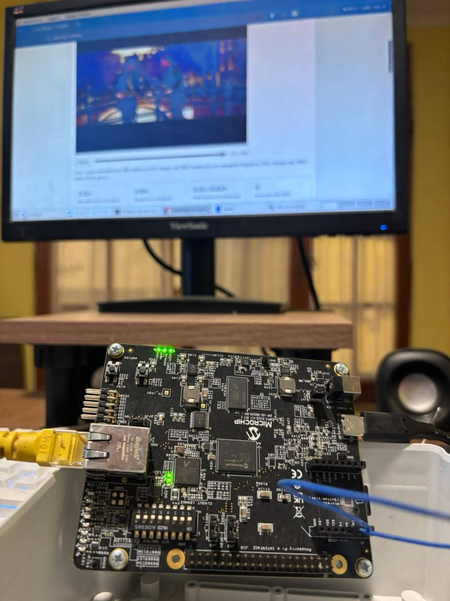

Universidad Tecnológica Nacional
Facultad Regional La Rioja
Ingeniería Electrónica · Proyecto Final
Decodificador de video
MPEG-2
en SoC FPGA con Linux
Desarrollo integral de un producto de propiedad intelectual

Presentación de Proyecto Final
Bustamante, Esteban Adriel
Docente tutor: Ing. Ricardo Maldonado
FPGA
RISC-V
Linux
Video digital
Hardware libre